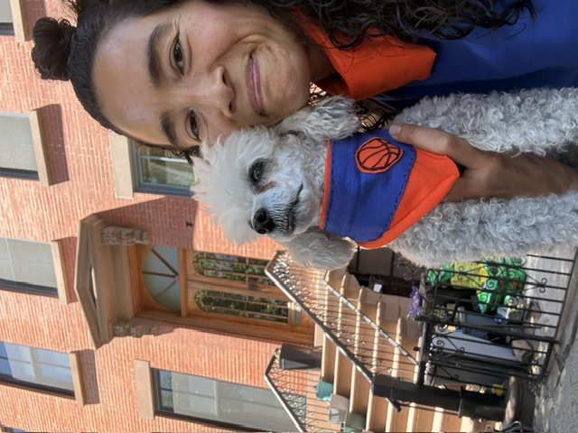

About me!
Hi, I'm Abby Addis. I'm a communications professional who has embarked on an exciting career pivot through the Skillcrush Power to Fly AI Developer program. My years in editorial work, nonprofit fundraising, and content strategy have given me strong writing skills, a knack for problem-solving, and a deep appreciation for communicating clearly with real audiences. I'm now pairing that background with new technical skills. I grew up in the DMV, have called New York City home since college, and I'm eager to keep learning with every project I build.